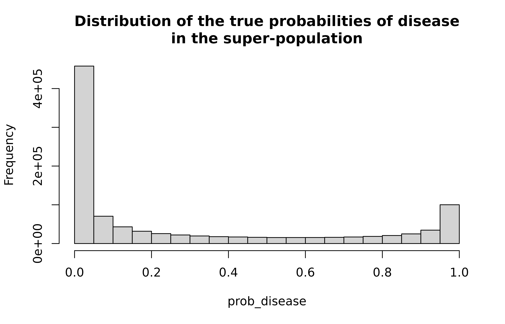
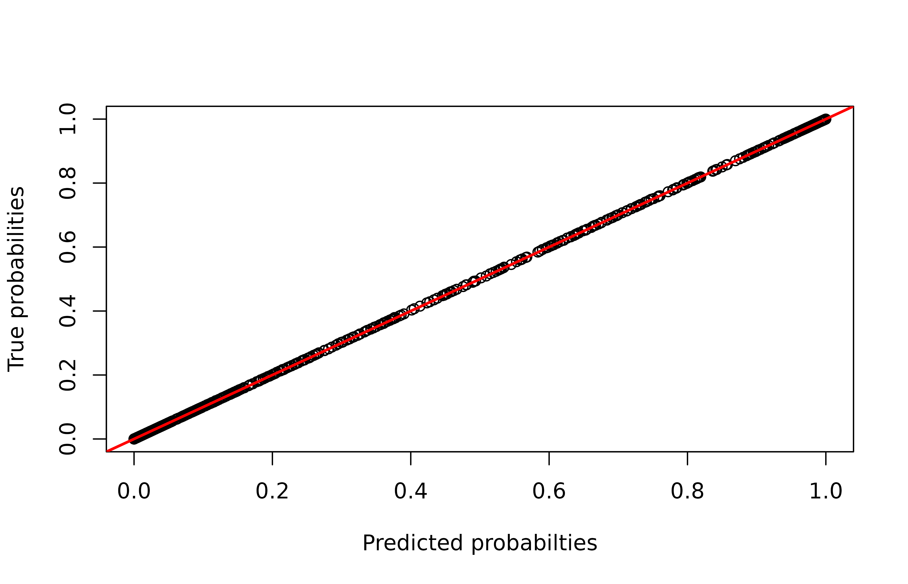
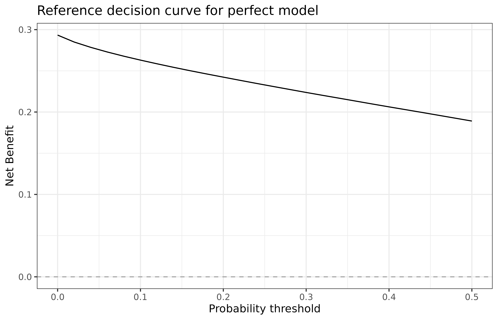
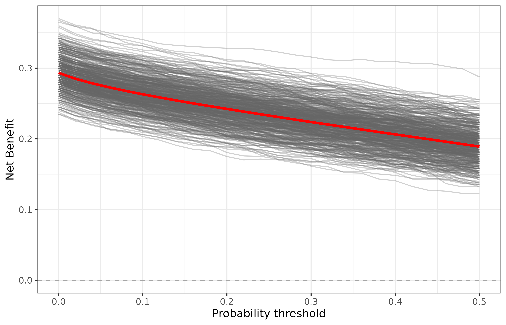
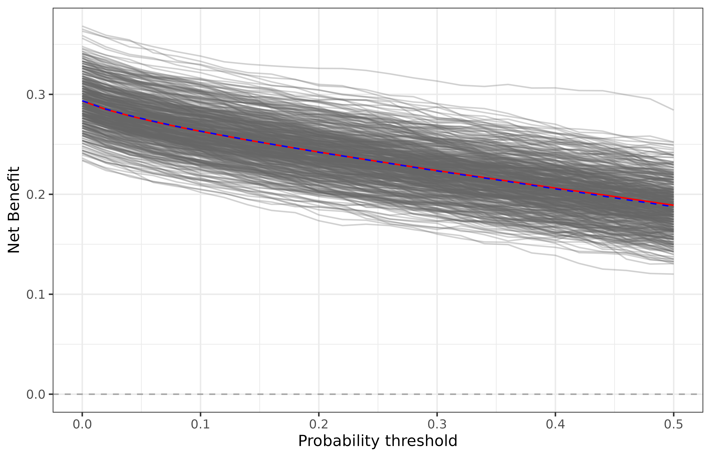
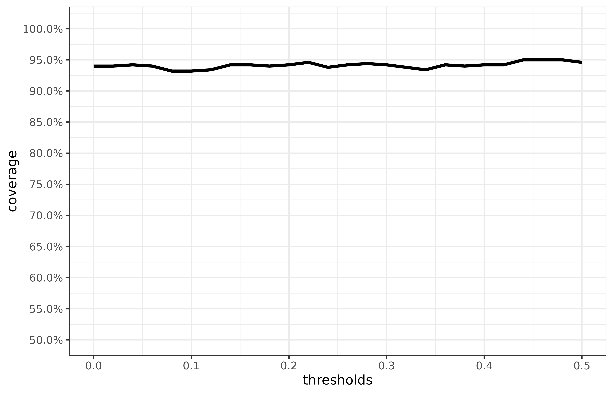

As a simple demonstration, let’s simulate ground truth data from a “super-population” of 2M patients, each with a pre-determined probability of disease. We’ll use samples from this population to estimate the decision curves using bayesDCA, and then check for bias in the estimation and empirical coverage of the uncertainty intervals.
Simulate super-population
Let’s simulate a population in which the probability of disease is determined by a linear combination of two independent normal random variables (plus an intercept).
N_pop <- 1e6
X <- cbind(
1, rnorm(N_pop), rnorm(N_pop)
)
beta <- c(-2.5, 3, -3)
prob_disease <- plogis(X %*% beta)
hist(
prob_disease,
main = "Distribution of the true probabilities of disease\nin the super-population"
)
In practice these probabilities are not observable, so we must simulate the actual binary outcomes as well. A logistic regression models recovers the parameters perfectly given our huge sample size and simple setting.
df_pop <- data.frame(
y = rbinom(N_pop, 1, prob_disease),
X[,-1]
)
model <- glm(y ~ X1 + X2, data = df_pop, family = 'binomial')
print(model)
#>
#> Call: glm(formula = y ~ X1 + X2, family = "binomial", data = df_pop)
#>
#> Coefficients:
#> (Intercept) X1 X2
#> -2.510 3.003 -3.006
#>
#> Degrees of Freedom: 999999 Total (i.e. Null); 999997 Residual
#> Null Deviance: 1210000
#> Residual Deviance: 480500 AIC: 480500As expected, the predicted probabilities match the true probabilities of disease.
predicted_prob_disease <- predict(model, type = 'response')
ix <- sample(1:N_pop, 1e3) # select patients to plot fast
plot(
predicted_prob_disease[ix],
prob_disease[ix],
xlab = "Predicted probabilties",
ylab = "True probabilities"
)
abline(0, 1, col = 'red', lwd = 2)
Let’s use these accurate predictions to make a reference decision curve, which we will use as ground truth. In order to do that, we’ll use the bayesDCA:::get_thr_data function, which bayesDCA uses under the hood to compute true positive/negative calls for each probability threshold, given a series of outcomes and predictions.
dca_pop_data <- bayesDCA:::get_thr_data(
outcomes = df_pop$y,
predictions = predicted_prob_disease
)
head(dca_pop_data)
#> # A tibble: 6 × 5
#> N d tp tn thresholds
#> <int> <int> <int> <int> <dbl>
#> 1 1000000 293370 293370 0 0
#> 2 1000000 293370 291800 371070 0.02
#> 3 1000000 293370 289854 433944 0.04
#> 4 1000000 293370 287842 471619 0.06
#> 5 1000000 293370 285794 498908 0.08
#> 6 1000000 293370 283763 519812 0.1With these we are ready to plot our reference decision curve. Recall that DCA plots Net Benefit (NB) against probability thresholds. The NB is defined as:
\[ NB_t = p \cdot Se_t - (1 - p)\cdot (1-Sp_t) \cdot \frac{t}{1-t} \]
where \(p\) is prevalence or outcome proportion, \(Se_t\) is sensitivity at threshold \(t\) and \(Sp_t\) is the specificity at threshold \(t\).
We first compute \(p\) (same for all \(t\)), \(Se_t\), and \(Sp_t\), and then the actual \(NB_t\).
library(tidyverse)
#> ── Attaching packages ─────────────────────────────────────── tidyverse 1.3.1 ──
#> ✓ ggplot2 3.3.5 ✓ purrr 0.3.4
#> ✓ tibble 3.1.6 ✓ dplyr 1.0.7
#> ✓ tidyr 1.1.4 ✓ stringr 1.4.0
#> ✓ readr 2.1.1 ✓ forcats 0.5.1
#> ── Conflicts ────────────────────────────────────────── tidyverse_conflicts() ──
#> x dplyr::filter() masks stats::filter()
#> x dplyr::lag() masks stats::lag()
dca_pop_data <- dca_pop_data %>%
mutate(
p = d/N,
Se = tp/d,
Sp = tn/(N-d),
NB = Se*p - (1-p)*(1-Sp)*(thresholds/(1-thresholds))
)
head(dca_pop_data)
#> # A tibble: 6 × 9
#> N d tp tn thresholds p Se Sp NB
#> <int> <int> <int> <int> <dbl> <dbl> <dbl> <dbl> <dbl>
#> 1 1000000 293370 293370 0 0 0.293 1 0 0.293
#> 2 1000000 293370 291800 371070 0.02 0.293 0.995 0.525 0.285
#> 3 1000000 293370 289854 433944 0.04 0.293 0.988 0.614 0.278
#> 4 1000000 293370 287842 471619 0.06 0.293 0.981 0.667 0.273
#> 5 1000000 293370 285794 498908 0.08 0.293 0.974 0.706 0.268
#> 6 1000000 293370 283763 519812 0.1 0.293 0.967 0.736 0.263We can plot the reference decision curve:
dca_pop_data %>%
ggplot(aes(thresholds, NB)) +
geom_line() +
geom_hline(yintercept = 0, alpha = 0.3, linetype = "dashed") +
labs(x = "Probability threshold",
y = "Net Benefit",
title = "Reference decision curve for perfect model") +
theme_bw()
Simulating validation studies
In a validation study, we use DCA to assess the performance of a previously-estimated model in a sample of the population. Given our (nearly perfect) model, we can study the variability in the decision curve estimates by computing them for many subsamples of our super-population. Let’s simulate B=500 validation studies for our model. In each validation study, we will use samples of size N=400 to get 120 expected events. The variable subsamples_ix below is a list of length \(B\) whose items are subsample indexes for our super-population - each of length \(N\).
We then simulate the validation studies, following the same steps to compute a decision curve for each. We keep only the thresholds and NB information for further analysis.
validations <- vector('list', B)
for (i in 1:B) {
sample_ix <- samples_ix[[i]]
df_sample <- df_pop[sample_ix, ]
pred_prob_sample <- predict(model,
newdata = df_sample,
type = 'response')
dca_sample_data <- bayesDCA:::get_thr_data(df_sample$y,
pred_prob_sample) %>%
mutate(
p = d/N,
Se = tp/d,
Sp = tn/(N-d),
NB = Se*p - (1-p)*(1-Sp)*(thresholds/(1-thresholds))
) %>%
select(thresholds, NB)
validations[[i]] <- dca_sample_data
}
# collect simulated studies into data.frame
validations <- validations %>%
bind_rows(.id = "study_id")Let’s now plot the simulations against the reference decision curve. In gray, we plot the curves from each sample; in red, the reference curve.
ggplot() +
geom_line(
data = validations,
aes(thresholds, NB, group = study_id),
color = "gray40", alpha = 0.3
) +
geom_line(
data = dca_pop_data,
aes(thresholds, NB),
color = "red", lwd = 1.2
) +
geom_hline(yintercept = 0, alpha = 0.3, linetype = "dashed") +
labs(x = "Probability threshold",
y = "Net Benefit") +
theme_bw()
Even though on average this procedure seems to do fine, it is clear that there’s some non-negligible uncertainty in the decision curve estimation process. For studies lying on the top of the plot, perhaps you will feel overconfident about your model; for studies in the bottom of the lines distribution, you might end up discarding an actually useful model. The bayesDCA R package deals with that by estimating uncertainty intervals around each estimated curve, for each individual validation study.
Let’s now repeat the simulation above, but using bayesDCA to estimate the decision curves. We will check for bias in the curve estimates as well as for pointwise coverage of the uncertainty intervals.
Validating with bayesDCA
We follow the same steps as before, but use bayesDCA for all computations. The select statement below converts bayesDCA output into the notation we have been using so far.
library(bayesDCA)
validations <- vector('list', B)
for (i in 1:B) {
sample_ix <- samples_ix[[i]]
df_sample <- df_pop[sample_ix, ]
pred_prob_sample <- predict(model,
newdata = df_sample,
type = 'response')
dca_fit_sample <- dca_predictive_model(df_sample$y,
pred_prob_sample)
dca_sample_data <- dca_fit_sample$net_benefit %>%
select(thresholds := thr,
NB := estimate,
lower := `2.5%`,
upper := `97.5%`)
validations[[i]] <- dca_sample_data
}
# collect simulated studies into data.frame
validations <- validations %>%
bind_rows(.id = "study_id")Let’s plot a single decision curve from bayesDCA just to visualize the primary uncertainty intervals:
plot(dca_fit_sample, .color = 'blue') +
geom_line(
data = dca_pop_data,
aes(thresholds, NB),
color = "red", linetype = "dashed"
)
The interval properly captures the reference curve. Notice that the maximum estimated NB does not exactly match the maximum reference NB. This is because our sample has observed prevalence of 0.2875, while the super-population has a true prevalence of 0.29337.
We then plot the point estimates for each curve along with the reference decision curve, plus the pointwise average of the estimated (dashed blue):
ggplot() +
geom_line(
data = validations,
aes(thresholds, NB, group = study_id),
color = "gray40", alpha = 0.3
) +
geom_line(
data = dca_pop_data,
aes(thresholds, NB),
color = "red"
) +
geom_line(
data = validations %>%
group_by(thresholds) %>%
summarise(NB = mean(NB)),
aes(thresholds, NB),
color = "blue", linetype = 'dashed'
) +
geom_hline(yintercept = 0, alpha = 0.3, linetype = "dashed") +
labs(x = "Probability threshold",
y = "Net Benefit") +
theme_bw()
We see the same variability in the (unbiased) point estimates. But how did the uncertainty intervals do? Let’s compute the pointwise empirical coverage of the 95% credible intervals computed by default in bayesDCA.
df_coverage <- left_join(
validations %>% select(study_id, thresholds, lower, upper),
dca_pop_data %>% rename(true_NB := NB) %>% select(thresholds, true_NB),
by = "thresholds"
)
head(df_coverage)
#> # A tibble: 6 × 5
#> study_id thresholds lower upper true_NB
#> <chr> <dbl> <dbl> <dbl> <dbl>
#> 1 1 0 0.267 0.358 0.293
#> 2 1 0.02 0.256 0.348 0.285
#> 3 1 0.04 0.248 0.341 0.278
#> 4 1 0.06 0.243 0.336 0.273
#> 5 1 0.08 0.236 0.329 0.268
#> 6 1 0.1 0.233 0.327 0.263Group by threshold, summarize over study ids, and plot results:
df_coverage %>%
group_by(thresholds) %>%
summarise(
coverage = mean(
true_NB >= lower & true_NB <= upper
)
) %>%
ggplot(aes(
thresholds,
coverage
)) +
geom_line(lwd = 1.2) +
theme_bw() +
scale_y_continuous(labels = scales::percent,
limits = c(0.5, 1.01),
breaks = scales::pretty_breaks(10))
Conclusion
Decision Curve Analysis of predictive models in validation studies benefits from uncertainty quantification, as point estimates suffer from sampling variability. The R package bayesDCA accurately estimates decisions curves and provides reliable uncertainty intervals around such estimates.